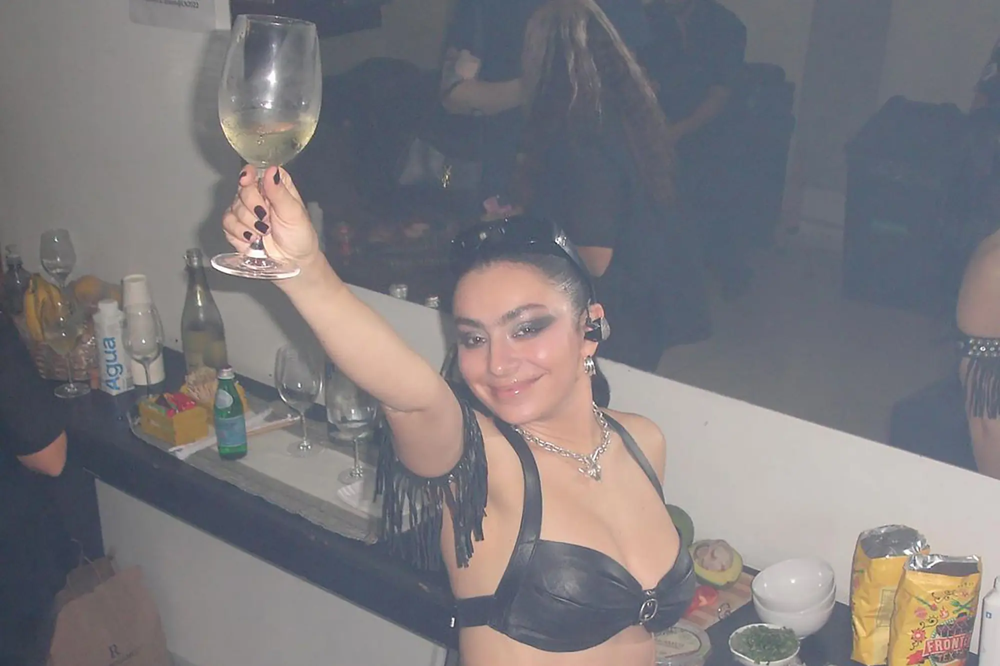

What people are saying...
Though "Party 4 U" was a fan favorite deep cut upon the release of how i'm feeling now, it wasn't until 2025 that the song began to experience mainstream traction. "Party 4 U" began to truly make waves as the result of a TikTok challenge that saw users lip-syncing to the song's rapped second verse, a reference to a similar moment on the television show RuPaul's Drag Race that involved a contestant's performance of the Paula Abdul song "Cold Hearted." (Charli herself participated in the trend.)
In mid-February of 2025, the song debuted at #80 on the U.S. Spotify Viral 100 chart, the highest entry of that week. Charli had this to say in response to the news:
it’s p crazy that this song is suddenly getting love in this kinda way. i know this song means so much to so many angels. she’s a cutie <3 https://t.co/8YRx2pAQ95
— Charli (@charli_xcx) February 19, 2025
(Charli's use of the term "Angels" refers to her fanbase—literally, Charli's Angels.)
The song itself had a long gestation period: initially written in 2017, "Party 4 U" was intended for Charli XCX's mixtape Pop 2. While the track was shelved for the time being, Charli would frequently include it in live performances, where it would become a cult favorite among diehard fans. That it would eventually see a formal release on how i'm feeling now fits the album's ethos well, as it was borne of Charli's decision to directly collaborate with fans on the album's visuals and sonic direction.
"Even the simplistic premise of 'party 4 u' takes on new meaning under the circumstances: 'I only threw this party for you/For you, for you, for you.' Hey, it’s not like anybody else can come.
The sentiments read simply, but with the collective fear and uncertainty of pandemic still surrounding us, their meaning feels profound. As Pitchfork contributor Shaad D’Souza wrote last week, Charli’s music is not the pop of the future, but a pure expression of the present. By design, How I’m Feeling Now is so current that it’s hard to imagine its message resonating the same way when life begins to feel normal once again. It’s a cultural artifact from the ultimate liminal space, between the old, pre-pandemic world and an uncertain new landscape—why should it live anywhere else?"
— Anna Gaca, Review: how i'm feeling now (Pitchfork)
"'This sounds EXACTLY like when you realise they will never again be the person you first met and there’s nothing you can do about it,' TikToker Georgie Hansen wrote in a post accompanied by [a] clip of the song. Another creator named Poppy said, 'this part of the song is going to bathroom mid-party and becoming conscious that ur acting like a completely different person.' And yet another take from musician Tyler Devine claimed, 'you’re all wrong. this song is crying in the club. it’s seeing the person u like kiss someone else. it’s the uber home alone.'"
— Lexi Williams, "Charli XCX Explained 'Party 4 U''s Meaning, So TikTok Can Relax Now" (Her Campus)